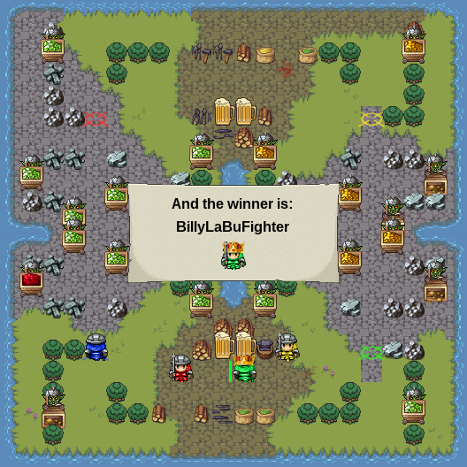

For the last interval of Expeditions, our class coded fighting bots. Once in the arena, we had no control over what they would do. It was all up to what we coded.
The maps were randomly generated, with arbitrary numbers of mines, taverns, and obstacles. You fight 3 other The mines collect one gold per turn, taverns take 2 gold but give you 50 health (you start with 100), and obstacles do nothing but make it harder to navigate the map. Players can take 20 points, and can own mines that take 20 health to capture. There are 1200 turns, and each player takes one turn, so each person gets 300 total turns.a There are 1200 turns, and each player takes one turn My bot was based on a system of inclinations: Hunger, Greed, and Murder. If Hunger was strongest, I would go to the closest tavern. If Greed was strongest, I would go to the closest free mine, or if it was more than double the distance from the closest taken mine, I would go there. If Murder was strongest, I would go to the closest enemy player. Which was strongest depended on how close I was to a tavern, mine, or player, and how my health and wealth were doing. , so each per
This code finds the closest of either a free mine, enemy mine, tavern, or enemy player and goes to that position:
var placeChooser = function(place) {
console.log(place);
var closestPlace = place[0];
for(i = 0; i < place.length; i++) {
if(bot.findDistance(myPos, closestPlace) > bot.findDistance(myPos, place[i])) {
closestPlace = place[i];
}
}
console.log("this is the closest place"+ closestPlace+ "this is my pos" + myPos)
bot.goDir = bot.findPath(myPos, closestPlace);
I won this game against three of my friends:
